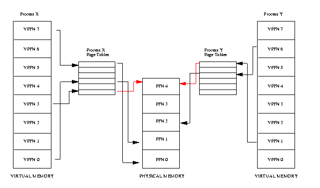

The three memory stats seen in top are VIRT, RES, SHR
If we run strace top and filter to only /proc calls
7401 newfstatat(AT_FDCWD, "/proc/7255", {st_mode=S_IFDIR|0555, st_size=0, ...}, 0) = 0
7401 openat(AT_FDCWD, "/proc/7255/stat", O_RDONLY) = 7
7401 openat(AT_FDCWD, "/proc/7255/statm", O_RDONLY) = 7
7401 newfstatat(AT_FDCWD, "/proc/7265", {st_mode=S_IFDIR|0555, st_size=0, ...}, 0) = 0
7401 openat(AT_FDCWD, "/proc/7265/stat", O_RDONLY) = 7
7401 openat(AT_FDCWD, "/proc/7265/statm", O_RDONLY) = 7
7401 newfstatat(AT_FDCWD, "/proc/7266", {st_mode=S_IFDIR|0555, st_size=0, ...}, 0) = 0
7401 openat(AT_FDCWD, "/proc/7266/stat", O_RDONLY) = 7
7401 openat(AT_FDCWD, "/proc/7266/statm", O_RDONLY) = 7
7401 newfstatat(AT_FDCWD, "/proc/7307", {st_mode=S_IFDIR|0555, st_size=0, ...}, 0) = 0
7401 openat(AT_FDCWD, "/proc/7307/stat", O_RDONLY) = 7
7401 openat(AT_FDCWD, "/proc/7307/statm", O_RDONLY) = 7
7401 newfstatat(AT_FDCWD, "/proc/7311", {st_mode=S_IFDIR|0555, st_size=0, ...}, 0) = 0
7401 openat(AT_FDCWD, "/proc/7311/stat", O_RDONLY) = 7
7401 openat(AT_FDCWD, "/proc/7311/statm", O_RDONLY) = 7
7401 newfstatat(AT_FDCWD, "/proc/7355", {st_mode=S_IFDIR|0555, st_size=0, ...}, 0) = 0
7401 openat(AT_FDCWD, "/proc/7355/stat", O_RDONLY) = 7
7401 openat(AT_FDCWD, "/proc/7355/statm", O_RDONLY) = 7
7401 newfstatat(AT_FDCWD, "/proc/7398", {st_mode=S_IFDIR|0555, st_size=0, ...}, 0) = 0
7401 openat(AT_FDCWD, "/proc/7398/stat", O_RDONLY) = 7
7401 openat(AT_FDCWD, "/proc/7398/statm", O_RDONLY) = 7
7401 newfstatat(AT_FDCWD, "/proc/7401", {st_mode=S_IFDIR|0555, st_size=0, ...}, 0) = 0
7401 openat(AT_FDCWD, "/proc/7401/stat", O_RDONLY) = 7
7401 openat(AT_FDCWD, "/proc/7401/statm", O_RDONLY) = 7
7401 openat(AT_FDCWD, "/proc/uptime", O_RDONLY) = 6
7401 faccessat2(AT_FDCWD, "/run/systemd/system/", F_OK, AT_SYMLINK_NOFOLLOW) = 0
7401 openat(AT_FDCWD, "/run/systemd/sessions/", O_RDONLY|O_NONBLOCK|O_CLOEXEC|O_DIRECTORY) = 6
7401 openat(AT_FDCWD, "/proc/loadavg", O_RDONLY) = 6
7401 +++ exited with 0 +++
/proc/pid/stat contains status of the program
/proc/pid/statm contains memory status of the program
If we look at some random process's statm
$cat /proc/139264/statm
2885 1344 960 239 0 509 0
As per the kernel docs the content of statm is structured as follows
| Field | Content | Details |
|---|---|---|
| size | total program size (pages) | (same as VmSize in status) |
| resident | size of memory portions (pages) | (same as VmRSS in status) |
| shared | number of pages that are shared | (i.e., backed by a file, same as RssFile+RssShmem in status) |
| trs | number of pages that are ‘code’ | (not including libs; broken, includes data segment) |
| lrs | number of pages of library | (always 0 on 2.6) |
| drs | number of pages of data/stack | (including libs; broken, includes library text) |
| dt | number of dirty pages | (always 0 on 2.6) |
Digging a bit more, VIRT (VmSize) refers to the number of available addresses, these do not need physically memory backing.
As in if we malloc but do not do anything with the pointer VmSize will increase but not the Resident Set Size (RSS).
RES seems synonymous with RSS, so the physically backed memory of a program. This doesn't take into account libraries already loaded, so will be more than the total memory allocated.
SHR it more obvious that it is the shared memory of the process, this is not only for inter process communication but also includes Dynamic libraries that are linked.
Below is an image from The Linux Documentation Project, I have highlighted the shared frame.
